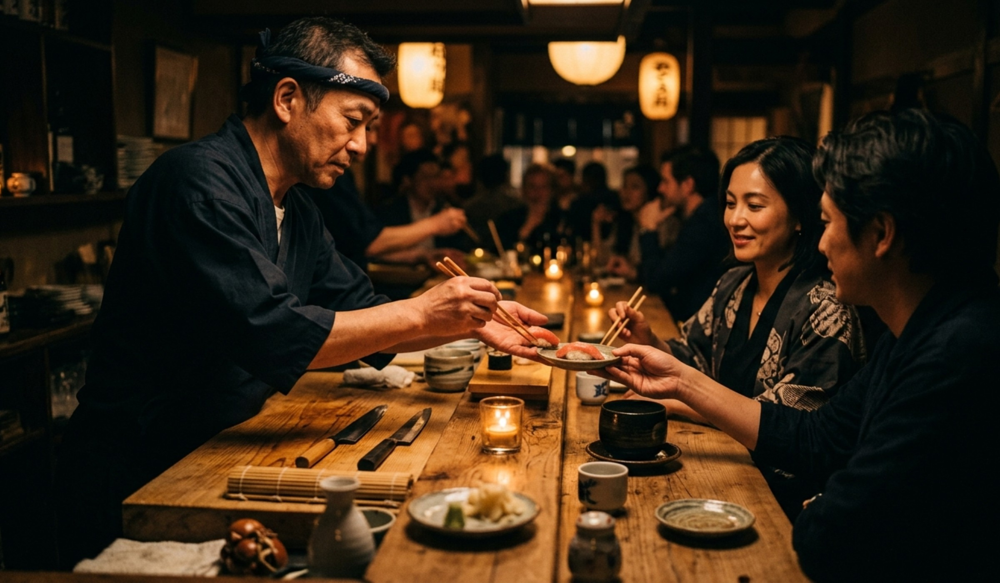
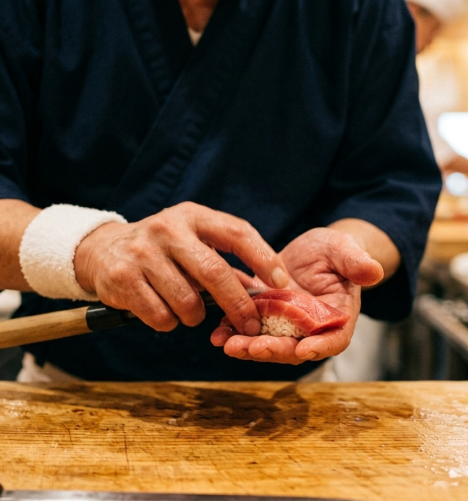
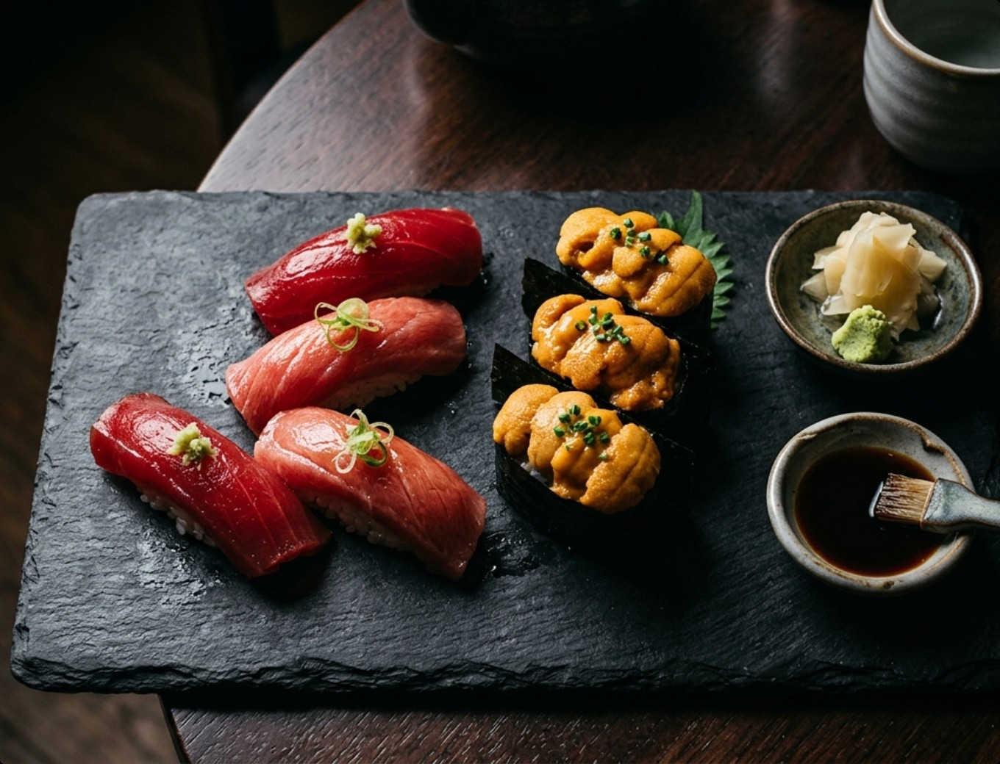
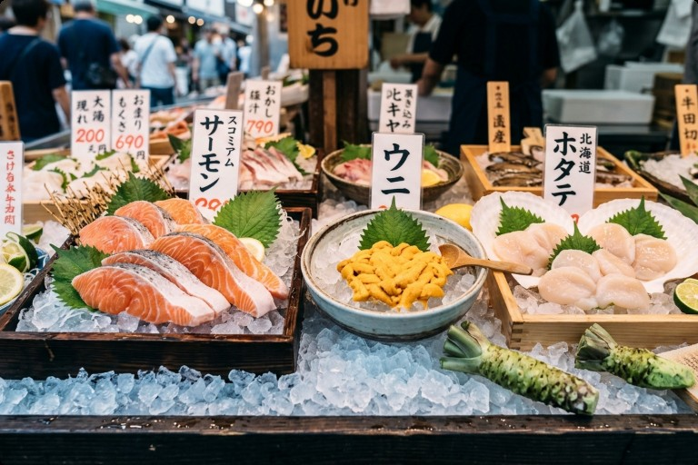
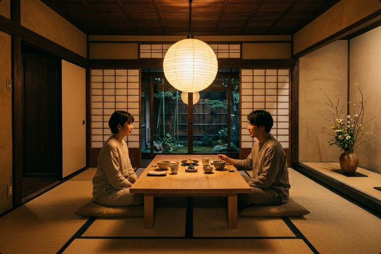
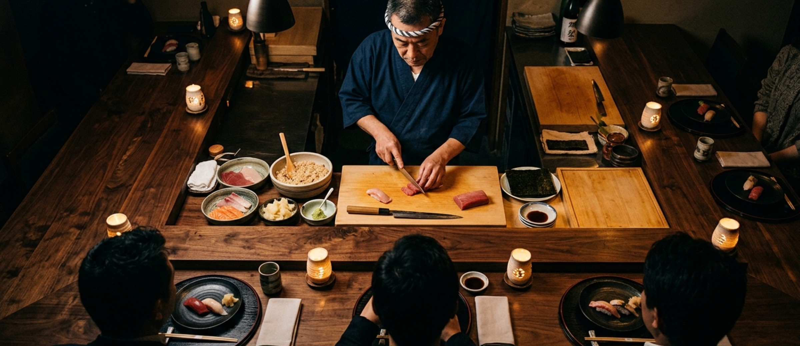

— 關於我們 —
為什麼松鶴與眾不同
我們相信，真正的壽司不需要過多修飾。來自三陸的牡蠣、北海道的海膽、長崎縣的鮪魚大腹，每一種食材都有它最完美的溫度與節奏。安田主廚用雙手，為每位客人量身打造屬於今日的 Omakase 旅程。
— 饗宴亮點 —
每一貫都是今日的故事
全程 Omakase
主廚依當季漁獲規劃 18 貫套餐
手選清酒搭配
侍酒師為每道菜推薦最匹配的日本地酒
無菜單主義
每日食材不同，每次都是全新體驗
包廂席位
設有 2 間獨立包廂，適合商務宴請或紀念日
空運直送
每日凌晨直送食材，午間即可到店處理

— 用餐體驗 —
踏入松鶴，
感受匠人的時間
踏入松鶴，檜木吧台的香氣迎面而來。客人以舒適的距離坐在主廚正前方，近距離欣賞每一貫壽司的誕生過程。用餐時長約 90 分鐘，節奏從容，如同一場小型表演。
用餐時長約 90 分鐘 · 節奏從容
— 視覺饗宴 —
一期一會，每一貫都是藝術



主廚握壽司的瞬間 · 本日食材展示台 · 獨立包廂空間
— 饕客留言 —
他們的話，是我們最好的菜單
「吃過米其林二星，但這裡的主廚精神更令我感動，每一貫都像是在說一個故事。」
「訂位難到懷疑人生，但每次吃完都覺得值得等一個月。」
— 預約流程 —
四步，進入松鶴的時光
01
填寫預約表單
選擇日期、時段與人數
02
客服確認
24 小時內收到確認簡訊與用餐須知
03
到店入座
提前 10 分鐘抵達，即刻感受松鶴氛圍
04
用餐後紀念
可選擇加購主廚親簽食材卡作為紀念

松鶴鮨座 Matsuzuru Sushi
由東京銀座修業三十二年的主廚安田孝明親自掌店
台北市大安區忠孝東路四段 218 號 2F
預約專線：02-2771-8899
週二至週日 12:00 / 18:30（週一公休）
© 2025 松鶴餐飲有限公司. All Rights Reserved.